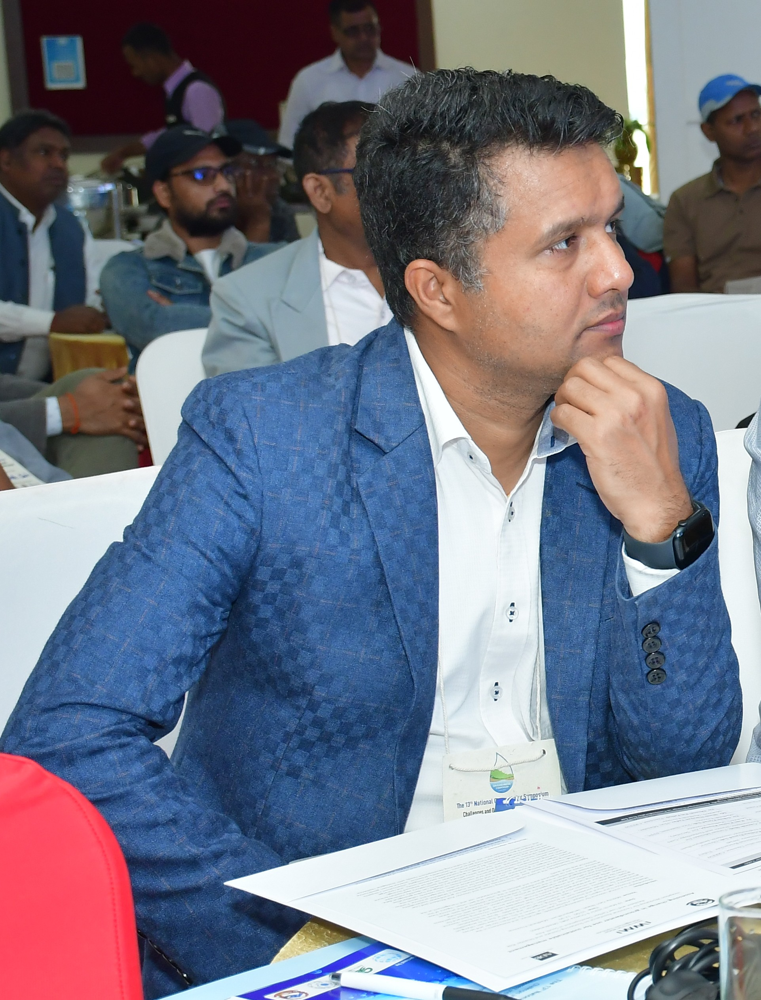

I am Dr. Anil Aryal, a citizen of Nepal currently working as a National Researcher in Water Resource Management at the International Water Management Institute (IWMI). I am a hydrologist by profession and academics. I have worked in a multi-cultural environment and multiple countries since 2010. I did my PhD in Integrated Water Resource Management from the University of Yamanashi (UY), Yamanashi Prefecture, Japan (2016–2019) and Master's degree in Water Engineering and Management from the Asian Institute of Technology (AIT), Thailand (2014–2016). I have more than 15 years of working experience in the field of water resources and climate change in Nepal, Japan, Thailand, and many other countries. In the past, I worked as a postdoc researcher at the University of Yamanashi from 2019 to 2022 and as a Senior Research Specialist at the Asian Institute of Technology from 2022 to 2023. Before that, I worked as a Civil Engineer and Lecturer for various other positions and organizations in Nepal. I completed a Bachelor degree in Civil Engineering from Nepal Engineering College (nec), Pokhara University (2006–2010).
This research aims to improve local expertise on climate resilient, inclusive, and sustainable Water, Sanitation and Hygiene (WASH) by producing evidence-based data and information, and ensuring their outreach, accessibility and use by local stakeholders, especially local governments in Dailekh and Sarlahi districts.
With climate change, concern about water security has been raised among the scientific and policy community. South Asia, where the Water Tower of Asia is located, home to the world's 1/4th population is always under water scarcity. In this project, we aim to map the water storage that is located in the South Asian countries viz, Nepal, India, Bhutan, Bangladesh, and Pakistan.
The project aims to evaluate the rainfall extremes to examine the socioenvironmental challenges in the world's largest man-made reservoir Volta River Basin (VRB) in West Africa using the long-term reanalysis data.
The inter relationship among water, energy and food is a key to achieving sustainable development goals and addressing the socio-economic-environmental challenges.
The research on climate extremes conducted at Babai River Basin (BaRB) for both historical time series (1986-2014) and future time series (2020-2100) using climate models from CMIP5 shows that the basin has two major zones regarding water availability.